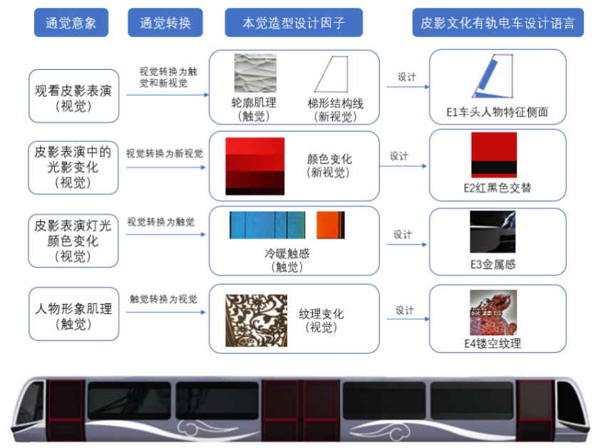

设计研究与创新方法 - 第5-3讲
授课教师：唐星-助理教授 | 西南交通大学设计艺术学院 | 主题：通感转译设计
通感转译的认知结构模型
模型框架
在整体设计过程中设计师作为主体，需要寻找让用户产生本觉的意象符号，而符号作为信息的载体，也是能够帮助用户更直观的理解信息的媒介。
通感转译的认知结构模型

设计流程
- 设计编码：从设计编码的角度出发，在心理体验过程中去捕获通感意象
- 特征提取：从中提取通感意象的各种特征
- 通感桥转化：经过整合和通感桥转化成用户本觉
- 符号表达：选取出最具意象特点的本觉，最后将这些本觉信息通过符号表达出来
双向作用
设计师和用户之间都是相互作用的，用户的本觉受到刺激，也对本觉信息符号进行编码，从而产生通觉体验。
通感桥构建
理论基础
根据格式塔原理，通觉意向和本觉意向是相通的。一种事物体现出来的特征是指的这个事物所体现出的整体特征，而这个整体特征的完整体现是需要每个组成成分相互作用下得到的。
通觉-本觉的感官觉互置过程

通感桥机制
通觉意向不能直接就转化为本觉意向，需要通过关联属性（通感桥）进行转换成需要的本觉意向。在观看皮影戏的这一个多感官共同进行的活动中，将其中的通觉意象借助通感桥的转换，找到与通感意象相通的意象作为本次设计的本觉意象。
转换过程
整体特征不限于组成成分的单独特征，各个成分相互关联，通过通感桥实现从多感官体验到目标感官体验的转化。
设计应用与效果
本觉产品造型设计因子提取
对本觉意象进行层次分析之后，首先，将视觉和触觉作为本次设计的本觉意象，即最终设计出来的产品外观所呈现的是视觉和触觉上的体验。
本觉产品造型设计因子推演

映射法则应用
- 视觉映射：根据fs视觉法则，将视觉分成形状、纹理、颜色三方面进行映射
- 触觉映射：在触觉上通过肌理、质感、温度三方面进行ft触觉法则映射
- 因子提取：从中提取出视觉和触觉产品造型设计因子
通感产品造型设计语言聚类分析

设计语言转换
转译模型是指设计师编码路径和用户解码路径双向进行并验证的思维过程模式。以设计师编码出发，找到通觉意象并进行通感转译为本觉意象，然后再将本觉意象造型设计因子转换为产品的造型设计语言。
通感产品造型设计语言及应用
设计应用
将成都皮影造型特点进行提取，应用到有轨电车的车头造型设计中。主要考虑顶盖、车前窗、车灯、前立柱、面罩等部件，利用皮影人物的高额头、蒜头鼻、下颚紧收等特征，调整比例关系，在灯光交相辉映下体现皮影的光影艺术之美。
文化价值
- 传播皮影文化，显示车头设计的文化韵律
- 在乘坐交通工具之余也能感受到传统文化魅力
- 实现传统文化与现代设计的有机融合
- 为城市交通工具注入文化内涵和情感价值